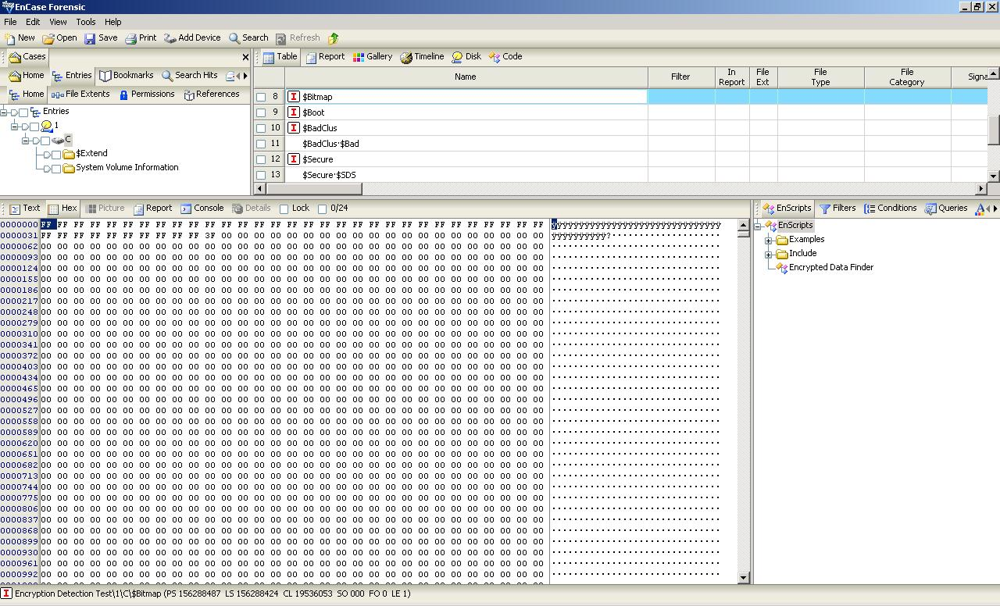

Filesystems¶
General¶
A filesystem is something which defines how data is stored and retrieved.
A filesystem typically stores all the metadata associated with the file - including the file name, length, and location within the directory hierarchy - separate from the contents of the file.
Most filesystems store the names of all the files which are in one directory in one place - the directory table for that directory - which is often stored like any other file. Many filesystems put only some of the metadata for a file in the directory table, and the rest of the metadata for that file in a completely separate structure, such as the inode.
Most filesystems also store metadata not associated with any one particular file. Such metadata includes information about unused regions - free space bitmap, or a B-Tree structure - and information about bad sectors. Often such information about an allocation group is stored inside the allocation group itself. More on this information in the filesystem-specific sections.
Features¶
Journaling¶
Write Barriers¶
So as mentioned above, in journaling filesystems changes to filesystem metadata are first written to a journal, and then once that journal write succeeds, a “commit record” is added to the journal to indicate that everything else there is valid. Only after the journal transaction has been comitted in this fashion can the kernel do the real metadata writes. Should the system crash in the middle, the info needed to safely finish the job can be found in the journal.
The catch here though is that the filesystem code must, before writing the commit record to the end of the journal, be absolutely sure that all of the transactions information has made it to the journal. Just doing the writes in proper order (metadata journal update then commit record) is not enough. Drives and arrays these days have large internal caches and will re-order operations for better performance. As such, the filesystem must explicitly instruct the disk to get all of the journal data onto the media before a commmit record can be written. If the commit record gets written before the metadata, your journal can become corrupt.
XFS¶
XFS is a high performance journaling file system. It generally excels in the execution of parallel input/output operations, due to its allocation group based design. XFS is an extent-based filesystem.
XFS is internally partitioned into allocation groups, which are virtual storage regions of fixed size. Any files and directories that you create can span multiple allocation groups. Each allocation group manages its own journal, its own inodes, and its free space independently of other allocation groups. This is where it gains its advantage in both scalability and parallelism. If the file system spans many physical devices, allocation groups can optimize throughput by taking advantage of the underlying separation of channels to the storage components.
XFS implements journaling for metadata operations. XFS records file system updates asynchronously to a circular buffer before it can commit the actual data updates to disk. The journal can either be located internally in the data section of the file system, or externally on a separate device to reduce contention for disk access. If the system crashes or loses power, the journal is read when the filesystem is remounted, and replays any pending metadata operations. The speed of this recovery is not dependent on the size of the filesystem.
To reduce fragmentation and file scattering, each file’s blocks in XFS can have variable length extents
Whilst many other filesystems manage space allocation with one or more block oriented bitmaps (see NTFS), in XFS these structures are replaced with an extent oriented structure consisting of a pair of B+ trees (see TODO for more information on B-trees) for each file system allocation group.
Ref: http://linux-xfs.sgi.com/projects/xfs/papers/xfs_white/xfs_white_paper.html https://en.wikipedia.org/wiki/XFS
NTFS¶
We generally don’t care about NTFS, but we did mention “free space bitmap” in the general section. You may also remember having to “defrag” your hard drive and were wondering why. While ext* also use free space bitmaps, NTFS’s implementation gives the clearest explanation of this phenomenon.
NTFS uses a special $BitMap file to keep track of all the used and unused “clusters” (ntfs nomenclature for logical blocks: anywhere from 512b to 64KB) on an NTFS volume. It’s a single file (a type of Free Space Bitmap as mentioned above) which contains a mapping of the entire volume, where when a file takes up space on the NTFS volume, the corresponding location in the $BitMap file is marked as used (11111...). When data is removed, the corresponding map location is marked 0 as unused. When an OS is looking to write out a file, it scans this map file to see where the next available logical block is in which it can place this data, writes out a block, then continues on looking for the next free space available such that it can finish writing the file (if said file is larger than a single block). Even if the OS manages to write out the whole file in contiguous blocks, another file will be written immediately after it. If the original file grows at all, it becomes fragmented. We can see with this approach how quickly fragmentation can occur, and how unruly a $BitMap file can get on a large filesystem (64MB on a 2TB drive).
Here we can see the bitmap from an NTFS volume with a single 1MB file added:
Note that ext3/4 also use bitmaps, but in regards to fragmentation they are a little bit smarter. Instead of placing multiple files near each other on the hard disk, ext3/4 will scatter different files all over the disk, leaving a large amount of free space between them. They will also choose free blocks around the (growing) file when writing out new data, rather than just the first free block they find. If a file does end up fragmenting, the file system will attempt to move the files around to reduce fragmentation (in ext4 at least). It does this automatically, without the need to run any utility. It can do this so long as the filesystem is not super full (80%+).
Ref: https://whereismydata.wordpress.com/2009/06/01/forensics-what-is-the-bitmap/